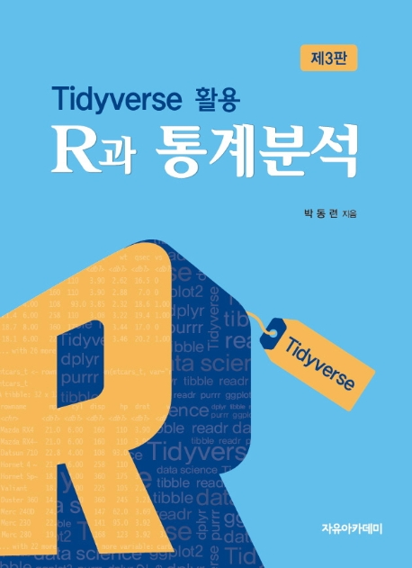

tidyverse
with()
readr
read_table()
read_csv()
read_fwf()
dplyr
filter()
slice()
arrange()
distinct()
select()
rename()
rename_with()
relocate()
mutate()
transmute()
summarise()
group_by()
across()
rowwise()
ggplot2
tidyr
pivot_longer()
pivot_wider()
separate()
unite()
stringr
if()
ifelse()
switch()
purrr
broom
박동련
2022-02-17
